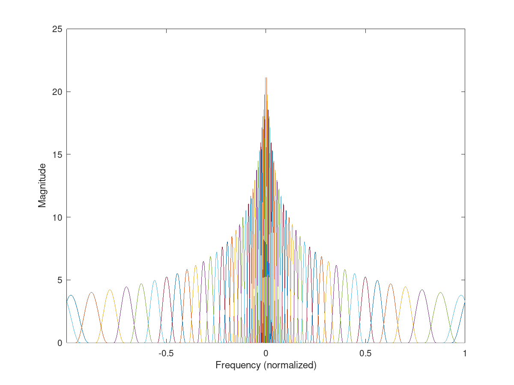

IFILTERBANKITER - Filter bank iterative inversion
Usage
f=ifilterbankiter(c,g,a);
Description
ifilterbankiter(c,g,a) iteratively synthesizes a signal f from the coefficients c which were obtained using the filters stored in g for a channel subsampling rate of a (the hop-size).
The filter bank g and the subsampling rate a must be the same as used in filterbank or ufilterbank.
This function is useful if there is no way how to explicitly compute a dual system using filterbankdual or filterbankrealdual.
Additional parameters
The function calls frsyniter and passes all the optional arguments to it. Please refer to help of frsyniter for further details.
Please note that by default, the function expects filterbank g to be created for real signals i.e. g cover only the positive frequencies. Additional flag 'complex' is required if the filterbank is defined for positive and negative frequencies.
Examples:
The following example compares convergence rates of CG and PCG for a filterbank which forms a frame, but it is neither uniform or painless:
[f,fs] = greasy; L = size(f,1);
[g,a,fc]=erbfilters(fs,L,'fractional','bwmul',0.6,'redmul',4/5,'complex');
filterbankfreqz(g,a,L,'plot','linabs');
% Filterbankdual does not work
try
gd=filterbankdual(g,a,L);
catch
disp('FILTERBANKDUAL exited with error.');
end
c = filterbank(f,g,a);
[fpcg,~,iterpcg] = ifilterbankiter(c,g,a,'complex','pcg');
[fcg,~,itercg] = ifilterbankiter(c,g,a,'complex','cg');
fprintf('CG achieved error %e in %d iterations.\n',norm(f-fcg), itercg);
fprintf('PCG achieved error %e in %d iterations.\n',norm(f-fpcg), iterpcg);
This code produces the following output:
FILTERBANKDUAL exited with error. CG achieved error 1.239517e-08 in 8.518380e-01 iterations. CG achieved error 2.282990e-01 in 1.352156e-01 iterations. CG achieved error 7.199650e-02 in 3.682894e-02 iterations. CG achieved error 2.277339e-02 in 1.127439e-02 iterations. CG achieved error 6.653289e-03 in 3.324901e-03 iterations. CG achieved error 1.933410e-03 in 1.096839e-03 iterations. CG achieved error 5.705102e-04 in 3.146289e-04 iterations. CG achieved error 1.597774e-04 in 9.410583e-05 iterations. CG achieved error 5.122942e-05 in 2.771363e-05 iterations. CG achieved error 1.421150e-05 in 7.901308e-06 iterations. CG achieved error 3.947956e-06 in 2.189086e-06 iterations. CG achieved error 1.118751e-06 in 5.936322e-07 iterations. CG achieved error 3.168044e-07 in 1.682330e-07 iterations. CG achieved error 8.463562e-08 in 4.319763e-08 iterations. CG achieved error 2.374047e-08 in 1.255792e-08 iterations. CG achieved error 6.699089e-09 in 3.227686e-09 iterations. CG achieved error 1.732575e-09 in 9.900235e-10 iterations. CG achieved error 4.666712e-10 in PCG achieved error 5.119604e-09 in 1.332029e+00 iterations. PCG achieved error 1.579145e-02 in 6.179433e-04 iterations. PCG achieved error 9.230243e-05 in 1.243251e-05 iterations. PCG achieved error 1.518653e-06 in 1.657418e-07 iterations. PCG achieved error 2.411197e-08 in 3.463050e-09 iterations.
Similar example with real filterbank:
[f,fs] = greasy; L = size(f,1);
[g,a,fc]=erbfilters(fs,L,'fractional','bwmul',0.6,'redmul',4/5);
filterbankfreqz(g,a,L,'plot','linabs');
% Filterbankrealdual does not work
try
gd=filterbankrealdual(g,a,L);
catch
disp('FILTERBANKREALDUAL exited with error.');
end
c = filterbank(f,g,a);
[fpcg,~,iterpcg] = ifilterbankiter(c,g,a,'pcg');
[fcg,~,itercg] = ifilterbankiter(c,g,a,'cg');
fprintf('CG achieved error %e in %d iterations.\n',norm(f-fcg), itercg);
fprintf('PCG achieved error %e in %d iterations.\n',norm(f-fpcg), iterpcg);
This code produces the following output:
FILTERBANKREALDUAL exited with error. CG achieved error 2.264421e-08 in 1.204249e+00 iterations. CG achieved error 3.215330e-01 in 1.896194e-01 iterations. CG achieved error 1.008908e-01 in 4.904095e-02 iterations. CG achieved error 2.719963e-02 in 1.371059e-02 iterations. CG achieved error 6.539005e-03 in 3.790845e-03 iterations. CG achieved error 1.994077e-03 in 9.993796e-04 iterations. CG achieved error 5.384409e-04 in 2.541302e-04 iterations. CG achieved error 1.363668e-04 in 7.360610e-05 iterations. CG achieved error 3.654122e-05 in 1.940476e-05 iterations. CG achieved error 8.636638e-06 in 4.769965e-06 iterations. CG achieved error 2.259629e-06 in 1.097924e-06 iterations. CG achieved error 5.634792e-07 in 3.004165e-07 iterations. CG achieved error 1.444433e-07 in 7.071338e-08 iterations. CG achieved error 3.473779e-08 in 1.929270e-08 iterations. CG achieved error 9.120012e-09 in 4.285682e-09 iterations. CG achieved error 2.359231e-09 in 1.140984e-09 iterations. PCG achieved error 4.826530e-09 in 1.884866e+00 iterations. PCG achieved error 2.215628e-02 in 7.376056e-04 iterations. PCG achieved error 8.860423e-05 in 7.206750e-06 iterations. PCG achieved error 1.021543e-06 in 8.228415e-08 iterations. PCG achieved error 7.455133e-09 in 5.572043e-10 iterations.

References:
T. Necciari, P. Balazs, N. Holighaus, and P. L. Søndergaard. The ERBlet transform: An auditory-based time-frequency representation with perfect reconstruction. In Proceedings of the 38th International Conference on Acoustics, Speech, and Signal Processing (ICASSP 2013), pages 498--502, Vancouver, Canada, May 2013. IEEE.